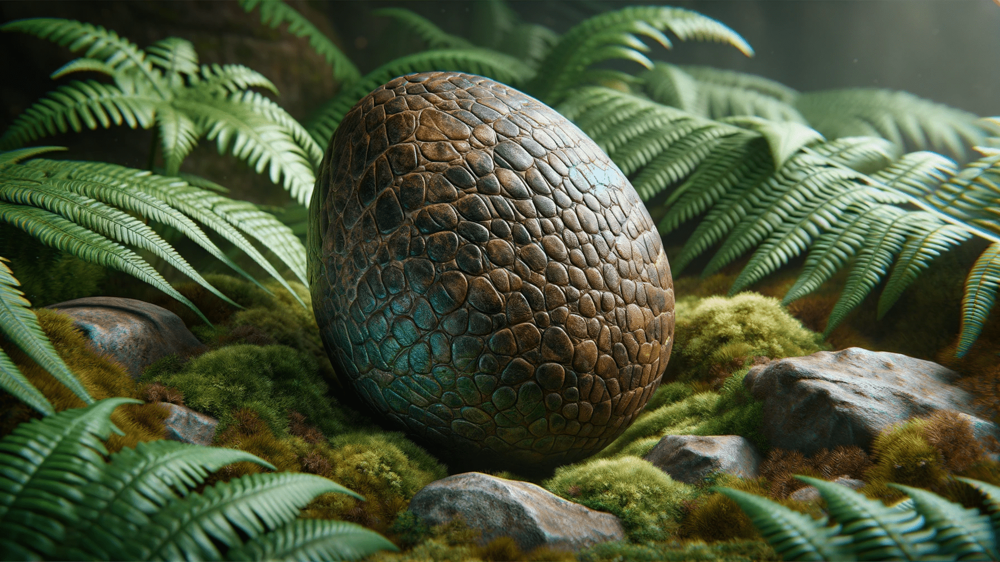

Discovery
Introduction: Insights into the Nature of the First Dinosaur Eggs
The study of dinosaurs, the magnificent creatures that once roamed Earth, consistently unveils surprising insights, particularly in their reproductive biology. Recent groundbreaking discoveries have revolutionized our understanding of dinosaur eggs. Evidence suggests that the earliest dinosaur eggs were leathery, challenging long-standing assumptions about their characteristics. These discoveries, centred around a species named Qianlong shouhu, have brought a new understanding of the evolution of dinosaur eggs. This revelation, emerging from analyzing early Jurassic fossils, marks a significant shift in our perception of dinosaur evolution, particularly in their reproductive strategies.
Discussion
The discovery of Qianlong shouhu, an early Jurassic sauropodomorph dinosaur in Guizhou, China,
has significantly advanced the understanding of dinosaur reproductive biology. Qianlong Shouhu
was a medium-sized basal sauropodomorph, measuring about six meters long and weighing
approximately one ton. The discovered fossils included three adult skeletons and five egg
clutches, suggesting a close association between the adults and their nesting sites. This has
led to the species name "shouhu," meaning "guarding" in Mandarin, reflecting the apparent
protective nature of the adult dinosaurs over their nests.
The eggs of Qianlong Shouhu have been a focal point of research. Detailed analysis of their
microstructure revealed a leathery texture, a characteristic not commonly associated with
dinosaur eggs, typically considered hard-shelled. The calcareous layer was thicker than most
soft-shelled eggs yet thinner than typical hard-shelled eggs, indicating a unique adaptation.
The earliest dinosaur eggs were small, leathery, and elliptical, challenging previous
assumptions about dinosaur reproduction. The evolutionary patterns observed in Qianlong Shouhu's
eggs provide evidence for a significant transition in egg morphology early in the evolution of
theropod dinosaurs rather than near the origin of birds.
The Leathery Eggs Hypothesis, emerging from the study of Qianlong Shouhu, challenges the
traditional view of dinosaur egg composition. Contrary to the belief that all dinosaur eggs had
hard shells similar to modern birds, this research indicates that the earliest dinosaur eggs
were more like those of modern reptiles, such as turtles, with a leathery texture.
Advanced scientific techniques, including histological thin-sectioning and electron microscopy,
were employed to study the microstructure of these eggs. The findings revealed that the
eggshells were thicker than most soft-shelled eggs but thinner than typical hard-shelled eggs.
This unique structure suggests a texture that is neither hard nor soft but somewhat leathery.
The microstructure analysis provided evidence that supports the notion of leathery eggs being
the ancestral state for various reptilian clades, including dinosaurs.
It suggests a significant transition in egg morphology early in the evolution of theropod
dinosaurs, offering new insights into their reproductive strategies and development. It
highlights the evolutionary flexibility and diversity in the reproductive adaptations of early
dinosaurs, providing a more nuanced understanding of their life history and biology.
The discovery of Qianlong shouhu and its leathery eggs has profound implications for our
understanding of dinosaur biology, revealing an intriguing evolutionary path in egg
characteristics. This finding indicates a transition from the early soft, leathery eggshells to
the complex, calcified shells in later dinosaurs and modern birds. This evolutionary shift in
eggshell texture and structure is thought to be a response to various ecological and
evolutionary pressures.
The leathery texture of the earliest dinosaur eggs suggests that the initial reproductive
strategies of dinosaurs were more akin to those of modern reptiles like turtles. This contrasts
sharply with the hard-shelled eggs of later dinosaurs and avians. The change from leathery to
hard shells may reflect adaptations to environmental conditions, such as the need for more
protection from predators or harsh environmental factors, or could be linked to the shift in
nesting behaviours and habitats over time.
The gradual change in eggshell characteristics over time is a notable aspect of the evolutionary
narrative of dinosaurs, shedding light on the complex interplay between environmental pressures
and biological adaptation.
The evolutionary analysis in the study of Qianlong Shouhu offers a comprehensive view of the
progression of egg characteristics across a vast array of over 200 fossil and living reptile
species. This extensive research helps trace the evolutionary trajectory of egg sizes, shapes,
and shell thicknesses, providing critical insights into the developmental biology of these
ancient creatures.
Researchers observed a notable trend in the evolution of egg size. Initially, there was a
decrease in relative egg size when tracing the lineage from early reptiles to dinosaurs.
However, this trend reversed among birds, where a significant increase in egg size was noted.
This shift in egg size is thought to reflect varying ecological and biological demands across
different evolutionary stages. Interestingly, the egg shape remained relatively consistent
throughout this evolutionary timeline despite the size and shell thickness changes. This
consistency in egg shape across such a diverse range of species and over significant
evolutionary periods underscores the fundamental role of egg morphology in the reproductive
strategies of these creatures.
Conclusion
The discovery of Qianlong shouhu and its leathery eggs has profoundly shifted our understanding of dinosaur biology, revealing an evolutionary trajectory in egg characteristics that defies previous assumptions. This groundbreaking find in Guizhou, China, has bridged gaps in our knowledge of dinosaur reproductive habits and egg evolution. The Leathery Eggs Hypothesis, emerging from the microstructural analysis of Qianlong shouhu eggs, challenges the traditional view of hard-shelled dinosaur eggs. Instead, it proposes that the earliest dinosaur eggs resembled those of modern reptiles with a leathery texture. This finding has significant implications for understanding the ecological and evolutionary pressures that influenced the development of dinosaur eggs. Moreover, the research provides insights into the broader dinosaur-to-bird transition, particularly regarding reproductive traits. It highlights the complexity of evolutionary adaptations and underlines the adaptability and diversity of these ancient creatures. The study revises our perception of dinosaur reproductive biology and contributes significantly to the broader paleobiology and evolutionary biology, enhancing our comprehension of life's evolutionary narrative.
Reference
Fenglu Han, Yilun Yu, Shukang Zhang, Rong Zeng, Xinjin Wang, Huiyang Cai, Tianzhuang Wu,
Yingfeng Wen, Sifu Cai, Chun Li, Rui Wu, Qi Zhao, Xing Xu, Exceptional Early Jurassic fossils
with leathery eggs shed light on dinosaur reproductive biology, National Science Review,
2023;, nwad258
https://doi.org/10.1093/nsr/nwad258
Yuan, L. (2023, November 13). Recent fossil discovery suggests the first dinosaur egg was leathery. Phys.org.
https://phys.org/news/2023-11-fossil-discovery-dinosaur-egg-leathery.html
Puiu, T. (2023, November 14). The first dinosaur eggs were probably leathery. ZME Science. .
https://www.zmescience.com/science/news-science/the-first-dinosaur-eggs-were-probably-leathery/